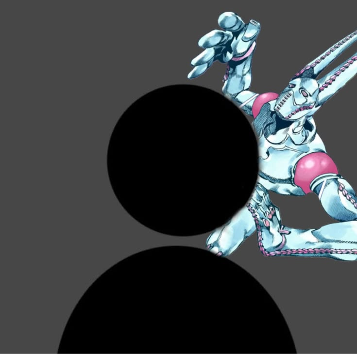

João Victor
Estudante de Front-end (HTML, CSS & JavaScript). Explorando tecnologia, cinema, literatura, games e boa música.
🎵 Música
- • MPB & Bossa Nova
- • Lo-fi
- • Instrumentais
- • Orquestra
- • Jazz psicodélico
🎮 Jogos & Atividades
- • The Legend of Zelda
- • Dark Souls & RPGs
- • Jogos em VR
- • Minecraft & Roblox
- • Skate de rua
- • Corrida de academia
📚 Leituras
- • Dom Casmurro
- • O Pequeno Príncipe
- • As 48 Leis do Poder
- • Cinema & Literatura
🎧
Trilha Sonora
Curta o som enquanto navega